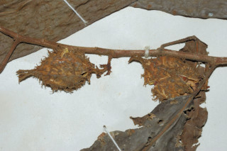
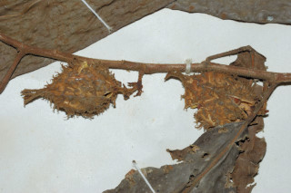

Images :


 

| Habit : | Trees up to 8 m tall. |
| Leaves : | Leaves simple , alternate , spiral ; petiole up to 1.5 cm long, tomentose ; lamina 15 x 5.5 cm, oblong , apex caudate , base rounded to subacute , tomentose along midrib beneath; midrib raised above; secondary_nerves 7-9 pairs, looped ; tertiary_nerves broadly reticulate . |
| Inflorescence / Flower : | Inflorescence axillary ; flowers unisexual , dioecious ; male flowers in axillary catkins , up to 1.5 cm long; female in short few flowered cymes . |
| Fruit and Seed : | Capsule 2 cm long, ovoid , beaked , softly echinate , tomentose ; stigma persistent with 6 subulate lobes . |